Do this for all work from now on
Building an Analysis
Project Directory Structure
Elements of a good spreadsheet
Is this a good spreadsheet?
Two Main Styles of Data
- Long: Each row is a single measurement
- Many measurements per observation
- Multple columns describing specific observation and measurement
- Wide: Each row is a complete observation
- Many measurement types are columns
Wide and Long Data

Wide Data
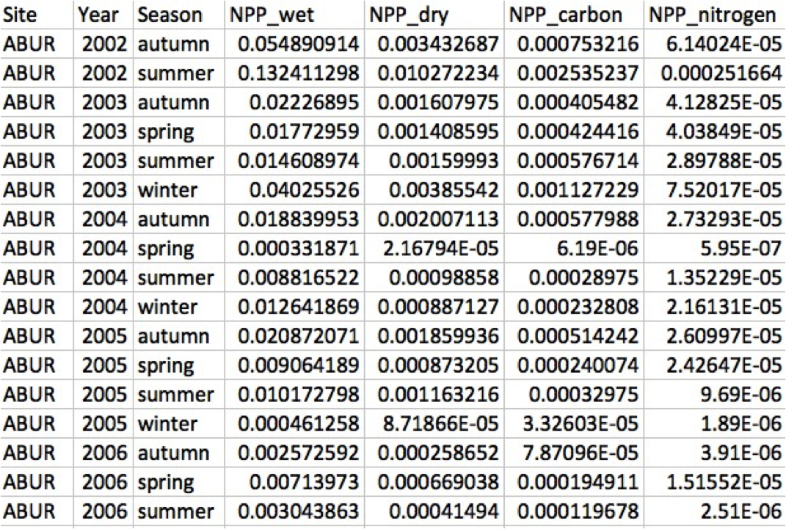
- One Observation per row
- All data fields are columns
Long Data
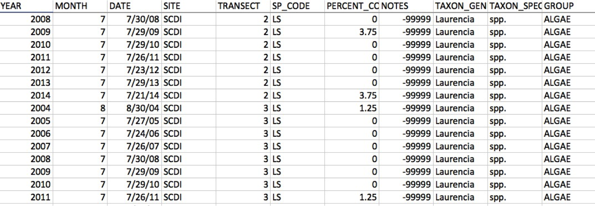
- Each measurement 1 row
- All information about measurement in row
Hybrid Data

- Neither long nor wide
- Each row has multiple measurements…but also some unique qualities
- Each row is not a complete observation
Syncing Data Collection and Entry

Wide or long?
Efficiency May Drive Data Sheet Design
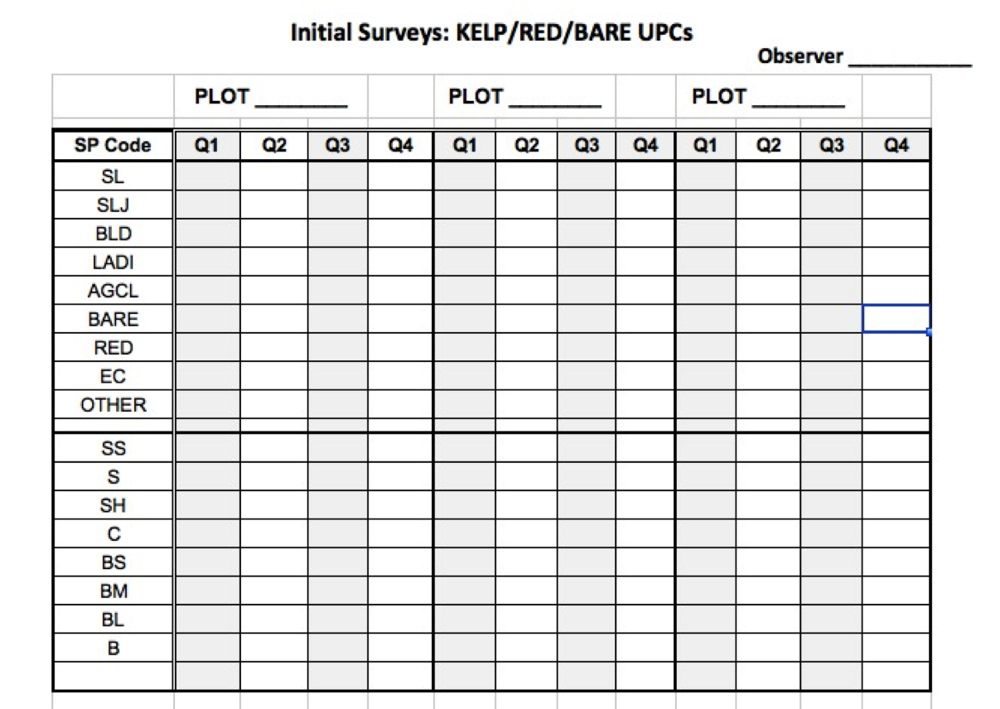
Efficiency May Drive Data Sheet Design
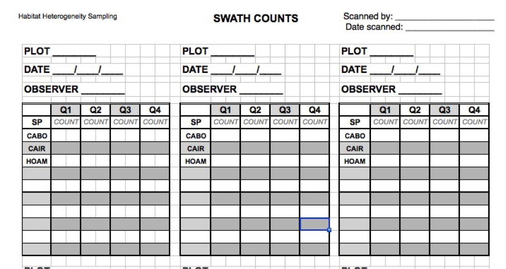
Good Rules for Data Entry
Columns should have only 1 type of data
One thing per cell
Keep metadata separate or repeated
No bare space
Consistent NA character
See Browman and Woo 2017 for man others
Initial Workbook Creation
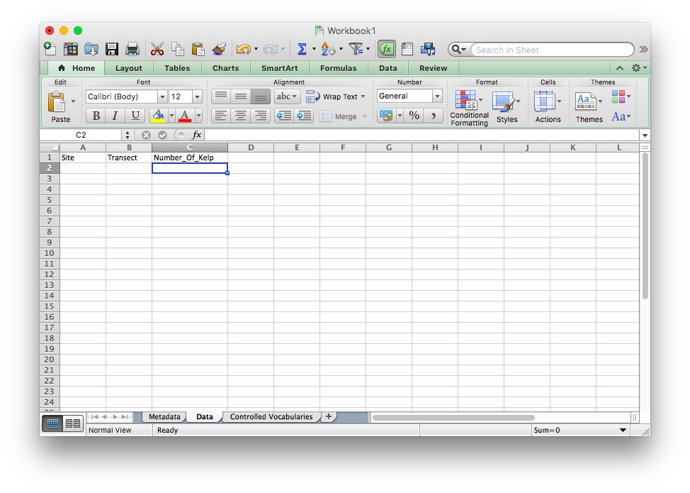
Initial Workbook Creation
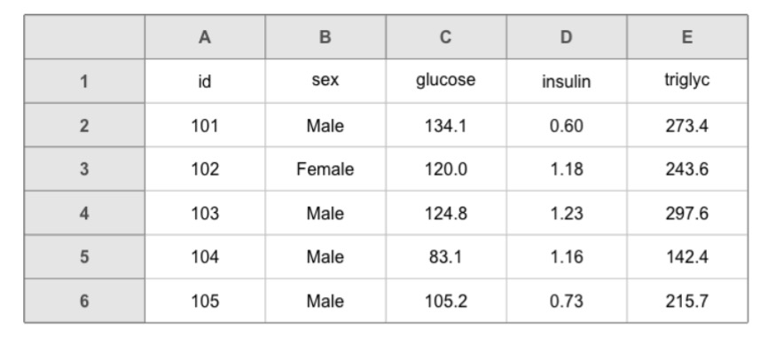
Wide or long or hybrid - your call
Browman and Woo 2017
Can have multiple sheets with linked columns
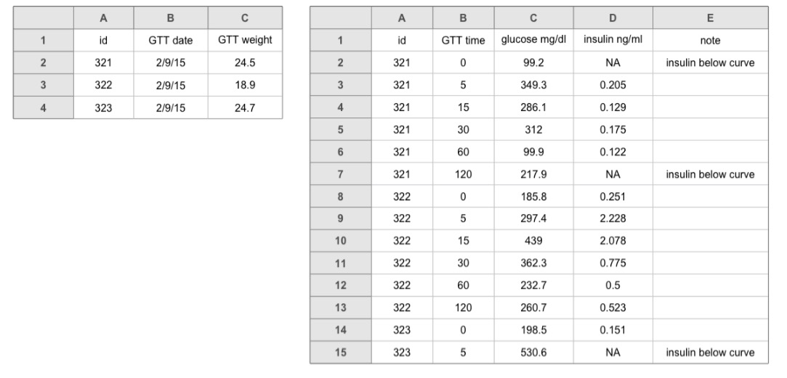
Browman and Woo 2017
Just say no to blank cells
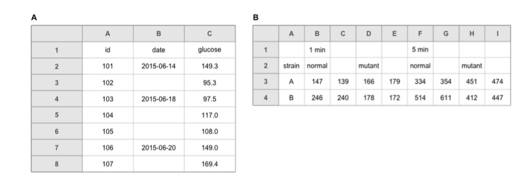
- Use NA, -, ., or something else standard
Browman and Woo 2017
Tab for Controlled Vocabularies
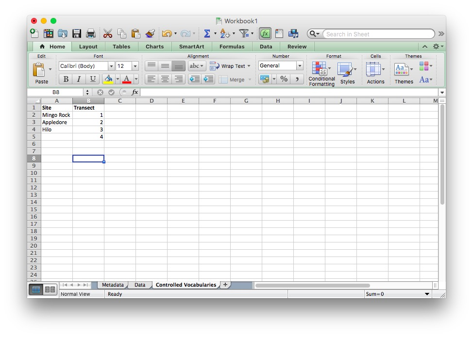
Make Variable Names Simple
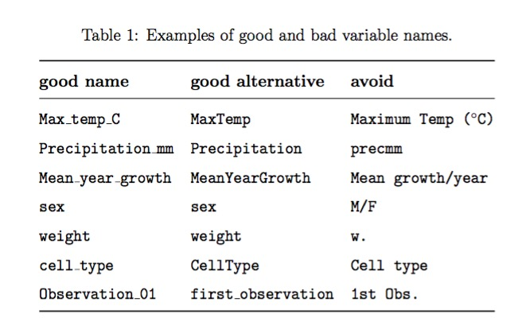
Browman and Woo 2017
Warning: Dates

- Use a Standard format
- But, a Day, Month, and Year column is not a bad idea
Tab for Recording Changes after Initial Entry
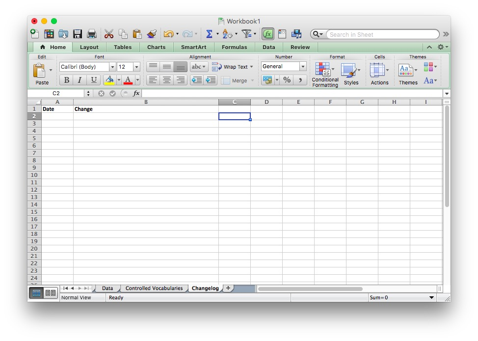
Building an Analysis
Project Directory Structure
Elements of a good spreadsheet
Is this a good spreadsheet?
Is this wide, long, other, or bad?
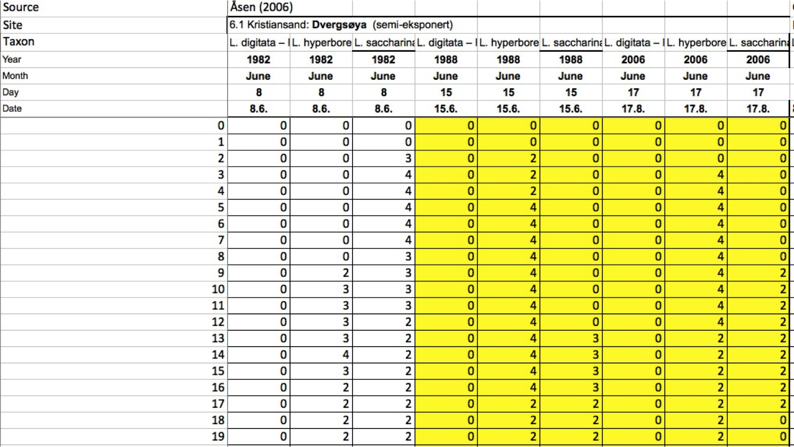
What is bad practice here?
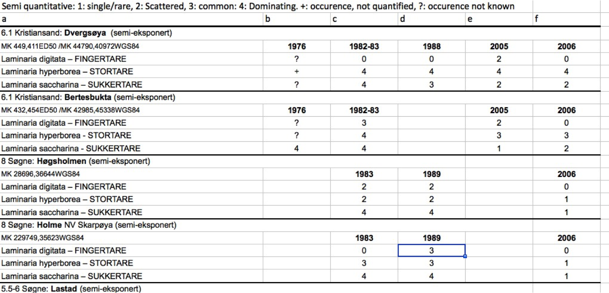
What is bad practice here?
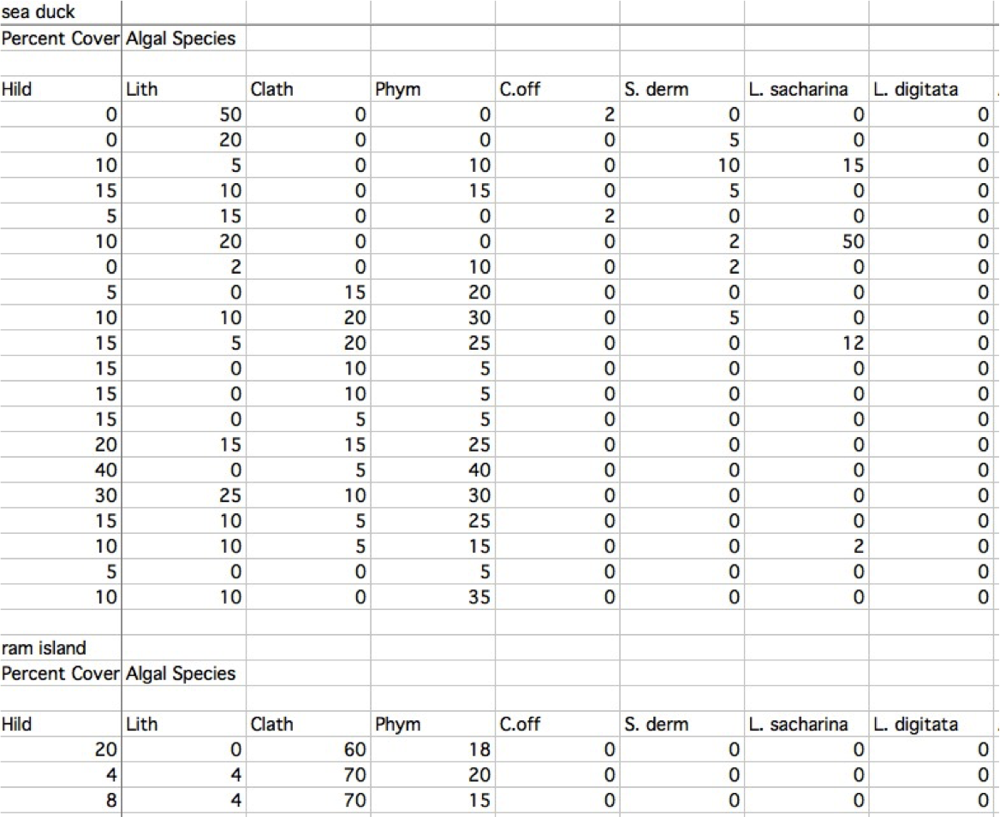